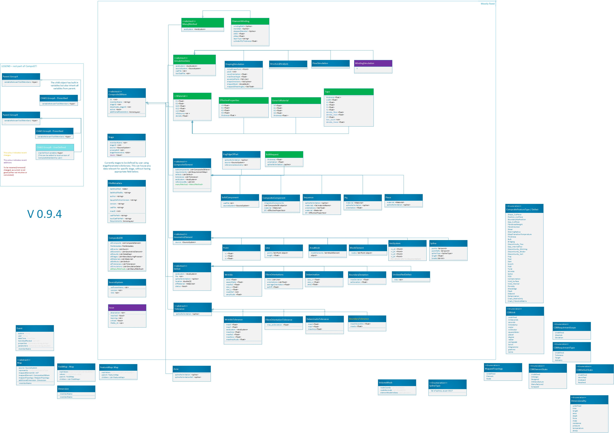

Architecture¶
{kind=link}
On the figure above, arrows point from an object 1 to object 2, where object 1 inherits from object 2.
The figure is also work-in-progress. The outline titled “mostly fixed” houses the objects that have been implemented and used. These will hopefully see only minor adjustments. Objects outside this area might end up being standardised differently than currently suggested.
All fields are optional unless otherwise specified, or unless required to construct specific object.
Where the same attribute is being called in parent and child (e.g. axis being referenced in ply, and in some of corresponding cut pieces), the more detailed (child) component supersedes the corresponding parent definition.
CompositeDB object is the main object of the Composite Standard. All objects are stored in lists named all***.
Object definitions¶
- CompositeStandard.CompositeDB(BaseModel)¶
All elements and all geometry are all stored here and used elsewhere as refrence Points are stored withing those, as referencing is not efficient
BaseModel input signifies the default generation with Pydantic library, without any local parent.
- Parameters:
name – str - name
allComposite – list - List of CompositeElement type objects
allEvents – list - List of “events” objects - all = exhaustive list
allGeometry – list - list of “GeometricElement” objects - all = exhaustive list
allStages – list - manuf process - all = exhaustive list
allMaterials – list - List of “Material” objects - all = exhaustive list
allDefects – list - List of “Defect” objects - should contain all, that are referenced elsewhere
allTolerance – list - List of “Tolerance” objects
fileMetadata – object - list of all “axisSystems” objects = exhaustive list
- CompositeStandard.FileMetadata(BaseModel)¶
Metadata related to this particular part.
- Parameters:
lastModified – date
lastModifiedBy – str - latest changes to the file have been done by
author – str - initial part definition created by
version – str - version of the CompoST used to work with this file
layupDefinitionVersion – str - initial part layup definition generated by
cadFile – str - related CAD file, if references to geometries are required, .step format is recommended. Should be stored in same folder.
maxID – int - maxium ID used for any object int the file, used for preventing duplicaiton of IDs
cadFilepath – str - should only be used when CAD could not be stored in same folder as this file
- CompositeStandard.CompositeDBItem(BaseModel)¶
- Parameters:
memberName – str - name
additionalParameters – dict - to hold use-case specific values (to be further defined)
additionalProperties – dict - to hold use-case specific objects (to be further defined)
stageIDs – int - reference to Stage object
deactivate_stageID – int - this object is not relevant after this stage, either it has been superceeded or it’s purpose was fullfilled
active – boolean - on default “True”, can be turned “False” to indicate this is no longer representative of up-to-date part
batchID – (TODO) - reference to batch of components
ID – int - used for references between objects
- CompositeStandard.GeometricElement(CompositeDBItem)¶
- Parameters:
source – str - the software, script, or database that this object originated from
refFile – str - reference full name of dedicated file housing this geometry (assume same directory)
- CompositeStandard.CompositeElement(CompositeDBItem)¶
This includes any object that is used to describe composite component specifically.
- Parameters:
subComponent – list -
get(), either as object or IDmappedProperties – dict - other properties not covered by materials class or similar
mappedRequirements – list - list of objects of Requirement type, to be further specified
defects – list - list of “defects” type objects
tolerances – list - list of “tolerance type objects
axisSystemID – int - refernce to object in allAxisSystems specified by ID
referencedBy – list - optional list of objects that currently reference this object
- CompositeStandard.Point(GeometricElement)¶
- Parameters:
x – float
y – float
z – float
- CompositeStandard.Line(GeometricElement)¶
- Parameters:
points – list - list of two points , no more - no less
IDs – list - list of two IDs corresponding to points, no more - no less
length – float - can be calculated from above, but can be stored to prevent calculation duplication
- CompositeStandard.AxisSystem(GeometricElement)¶
The three vectors listed bewow must be perpendicular to each other.
- Parameters:
o_pt – CompositeStandard.Point - origin location of axis system expressed in global axis system
x_pt – CompositeStandard.Point - point, (x_pt-o_pt) denoting x-vector of new axis system
y_pt – CompositeStandard.Point - point, (y_pt-o_pt) denoting y-vector of new axis system
z_pt – CompositeStandard.Point - point, (z_pt-o_pt) denoting z-vector of new axis system (this one is auto-calculated)
There were 3 main core requirements for definition of Axis System. It should be possible to write out reasonably simple axis system by user, without any calculations. Minimum number of values should be used for initial full definition of the axis system (8). The perpendicularity of the 3 axis should be enforeced without user participation.
The class definition automatically calculates z_pt, when this object is initialized or altered.
If y_pt made axis is not perpendicular to x_pt made axis, y_pt is recalculated using z_pt. User is encouraged to specify first 2 axis perpendicular to each other. However, if user fails to do so the object adjusts itself (at least when using the standard CompoST library in Python).
User cannot set z_pt on it’s own. Upon any changes this is recalculated from x_pt, y_pt and o_pt.
- CompositeStandard.Material(BaseModel)¶
To be expanded…
User of the format is responsible for using consistent units. CompoST does not enforce units used.
- Parameters:
materialName – str
E1 – float - young’s modulus in primary direction
E2 – float - young’s modulus in secondary direction (in-plane)
G23 – float - shear modulus
G12 – float - interlaminar shear modulus
v12 – float - poisson ratio in plane
infoSource – str - reference to source of the information
thickness – float - out of plane thickness
density – float
permeability_1 – float - permeability in primary direction
permeability_2 – float - permeability in secondary direction (in-plane)
permeability_3 – float - permeability out of plane / through thickness
type – str - (List to be provided)
- CompositeStandard.Piece(CompositeElement)¶
In practical terms this is section of ply layed-up in one (particulartly relevant for AFP or similar)
- Parameters:
splineRelimitaion – ‘Spline’ - points collected as spline for relimitation
splineRelimitationRef – int - same as above but stored as reference to ID of the object instead of the object itself
material – str - reference materialName (IDs not used here, as material can be located in external database)
- CompositeStandard.Ply(CompositeElement)¶
- Parameters:
splineRelimitaion – ‘Spline’ - points collected as spline for relimitation
splineRelimitationRef – int - same as above but stored as reference to ID of the object instead of the object itself
material – str - reference materialName (IDs not used here, as material can be located in external database)
orientation – float - direction of lay-up with reference to x-axis of placementRosette
- CompositeStandard.Sequence(CompositeElement)¶
Can either be defined complely by inherited properties (ply list in subComponents).
Or can be defined by list of orientations and materials, if no additional information is required.
For single-material laminate leave “materials” empty, and fill in “singleMaterial”
The subComponents in sequence must be ordered tool placement (first object is initial ply placed on the tool)
- Parameters:
orientations – list - list of floats, orientations listed with reference to placementRosette
materials – list - list of strings, materialName’s
singleMaterial – str - used only if 1 material is used through-out the sequence
splineRelimitaion – ‘Spline’ - points collected as spline for relimitation
splineRelimitationRef – int - same as above but stored as reference to ID of the object instead of the object itself
- EndEdgeOfPart(CompositeElement)¶
- Stands for engineering edge of part.
- Parameters:
splineRelimitaion – ‘Spline’ - points collected as spline for relimitation
splineRelimitationRef – int - same as above but stored as reference to ID of the object instead of the object itself
source – ‘SourceSystem’ - CAD system where this was defined
referenceGeometry – str - the name of edge of part defining geometry, as used inside CAD system
- CompositeStandard.CompositeComponent(CompositeElement)¶
- Parameters:
integratedComponents – list - allows for integrating othre complete CompoST databases as sub-components
- CompositeStandard.SourceSystem(BaseModel)¶
- Parameters:
softwareName – str
version – str - version used to generate objects referencing this
link – str - link to GitHub, docs… where appropriate
- CompositeStandard.MeshElement(GeometricElement)¶
- Parameters:
nodes – list - Point objects
normal – list - [x,y,z] in the list
- CompositeStandard.Spline(GeometricElement)¶
- Parameters:
splineType – int - types of splines based on OCC line types (ref to be provided)
pointRefs – list - list of IDs (only use this variable if ‘points’ variable unused
points – Point - This variable prevents complex ID referencing for points that belong to this spline only
length – float - calculated lenght of spline
breaks – list - list of integers referencing points which break spline into multiple for visual representation (e.g. sharp corners), this refers to points if available, or pointRefs.
- CompositeStandard.Defect(CompositeDBItem)¶
Note: storing a defect belonging to this class only stores the data regarding the feature. Weather or not this classifies as a defect in enginering process, depends on comparing the data stored here with the appropriate
CompositeStandard.Tolerance():param status: bool - None = not evaluated, True = defect outside of tolerance, False = deviation but fits within tolerance :param location: float - x,y,z location :param effMaterial: CompositeStandard.Material - adjusted material class saved :param axisSystemID: int - reference to AxisSystem object :param file: str - reference to file which houses defect - not needed if relimitation defined directly in CompoST :param splineRelimitation: Spline - object defining the area in question. If neither of spline definitions is used, it should be assumed the defect applies to full part as provided in CAD. :param splineRelimitationRef: int - same as above but refenced asIDonly. If neither of spline definitions is used, it should be assumed the defect applies to full part as provided in CAD.
- CompositeStandard.Wrinkle(Defect)¶
- Parameters:
area – float
aspectRatio – float - typically size_x/size_y
maxRoC – float - machimum rate of changes
size_x – float
size_y – float
meshRef – int - mesh corresponding to defect area or volume
amplitude – float - the size of the defect in out-of plane direction
- CompositeStandard.SolidComponent(CompositeElement)¶
CAD shapes, for instace useful when using a 3D core/insert
- Parameters:
cadFile – str - file path to the part, or reference to PLM site
sourceSystem – SourceSystem -
- CompositeStandard.Tolerance(CompositeDBItem)¶
- Parameters:
appliedToIDs – list - list of IDs that this tolerance definition applies to (allows for grouping tolerance definitions)
splineRelimitation – Spline - object defining the area in question
splineRelimitationRef – int - same as above but refenced as
IDonly.
- CompositeStandard.WrinkleTolerance(Tolerance)¶
- Parameters:
maxX – float
maxY – float
maxZ – float
axisSystemID – int
maxArea – float
maxSlope – float
maxSkew – float
maxAmplitude – float
- CompositeStandard.FibreOrientations(Defect)¶
- Parameters:
lines – list - list of Line objects, as scanned and translated into points and vectors
orientations – list - list of floats that should be the same size as
lines. This could also be calculated fromlinesandaxisSystemID.avDiffToNominal – float - average of local differences between orientation and defined ply orientation. This is more indicative than ‘averageOrientation’ as that one can offer falsely optimistic results.
averageOrientation – float - average of the above. This average does not take into account lenght of the lines, but simply averages all data points as if they were equal.
The objects below are temporary definitions, that might still be subject to changes. Included for testing purposes.
- CompositeStandard.FibreOrientationTolerance(Tolerance)¶
- Parameters:
max_avDiffToNominal: – float - average difference to intended ply orientation based off all sampling points within relimitation
- CompositeStandard.Stage(BaseModel)¶
Stage can be used as standalone object that is related to an actual process (NDT/Manufacturing/Analysis…). Users can also create their own sub-object that correspond to their processes, PlyScan below is such example. More details about the intended purpose of stages are available in Stages.
- Parameters:
stageID – int - unique stage identifier
memberName – str
source – SourceSystem
processRef – str - This is used to reference a file which describes process in question. CompoST is part focused, so processes are only referened here, rather than process details being stored.
- CompositeStandard.PlyScan(Stage)¶
(EXAMPLE) This is an example of Stage child defined by user. Right now it is assumed stages will be defined for each company according to their needs.
- Parameters:
machine – str - designation name of the machine underataking scanning
binderActivated – bool - indicates weather binder was activated during the layup
- CompositeStandard.Zone(CompositeDBItem)¶
There are many potentially uses of Zones, but for now author refrains from fully defining this, until Zones figure in multiple use-cases.
- Parameters:
splineRelimitation – Spline - object defining the area in question
splineRelimitationRef – int - same as above but refenced as
IDonly.
- CompositeStandard.Delamination(Defect)¶
Delamination occurs between two layers/plies, the convention is to append it to the one that is in the tool direction.
- Parameters:
size_x – float - length in x axis direction
size_y – float - length in y axis direction
area – float
- CompositeStandard.DelaminationTolerance(Tolerance)¶
- Parameters:
maxX – float - maximum length in x axis direction
maxY – float - maximum length in y axis direction
maxArea – flaot - maximume allowed area per defect
- CompositeStandard.BoundaryDeviation(Defect)¶
This defect is generated by comparing initial definition of boundary (of layer/sequence/piece/…) to boundary measured in later “Stage”.
- Parameters:
maxDeviation – float - maximum distance of a measured point from intended boundary
avDeviation – float - average deviation along the boundary
- CompositeStandard.BoundaryTolerance(Defect)¶
- Parameters:
maxAllowedDev – float - maximum allowed distance of a measured point from intended boundary
maxAv – float - maximum allowed average deviation along the entire boundary